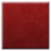
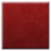

How to create a weapon for ttt
Folder Structure
Your workspace folder (Where you can throw everything thats not supposed to be in the final addon for easy access)
- ttt_weaponname (all lower case, _ instead of spaces)
- - lua (This is where the code goes)
- - - weapons (Specifying that youre making a weapon)
- - - - ttt_weaponname.lua (Code goes here)
- - materials (This is where textures go)
- - - vgui
- - - - ttt
- - - - - icon_uniqueidentifier_weaponname.vtf (The cause of death / shop icon. Has to be a unique name.
If two weapos happen to share an icon name, the server just uses the one it happens to download first for both.
This warning can also be found inside the example lua.)
- - - - - icon_uniqueidentifier_weaponname.vmt (This tells the source engine how it should handle the .vtf to avoid weird behavoir.)
Lua File
A weapon is usually contained to a single lua file.
We have created this example.lua as an easy starting point
(Inspired by the ttt.com AK47 template, and the Walther 2000).
Some more unique functions need extra code snippets.
(IF you want to write them yourselve, look at ttt_weapon_base. It has all the basic functions you can override in your own weapons lua file.)
• Adjustable Zoom (Already included in example.lua)
• Adjustable Cone While Aiming (Already included in example.lua)
• Sniper Scope
• Burst Fire (Works, but still needs to be cleaned up)
Creating a Shop Icon
Shop icons (always 64x64) are often just a picture of the weapon in front of a colored background.
The background files are available on ttt.com, but the .psd file breaks if you dont use photoshop.
Thats why we decided to just host the background images here:
 

• The blue background is for items that touch your inventory, even if they only have one charge
or get auto consumed or stuff like that.
• The red background is for effects and abilities that never touch your inventory.
While ttt.com provides other colors, only blue and red are ever used, so wed advise you stick with those.
Converting the finished shop icon
We are going to convert our shop icon into a .vtf file to ensure legacy support and eliminate wierd edgecases.
(Even tho using a png file would technically allow the addon to be a few kb smaller.)
Just download VTFEdit from the archived nemesis website (yes, this is also where the valve dev wiki will lead you),
and import your png.
The ttt2 doc reccomends these settings:

Links:
 My Bluesky |
My Bluesky |
 My Twitch |
My Twitch |
 My GFs page ♥
My GFs page ♥